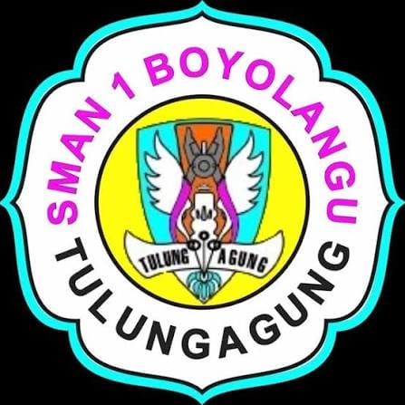

SMAN 1 BoyolanguGebyar Literasi Dashboard adminSEBUAH PERJALANAN PENGETAHUAN
Cerita dan karya
dari Gondang.
Selamat datang di Gebyar Literasi SMAN 1 Boyolangu. Kunjungi Stand Kelas XI-11 dan jelajahi Peta Gondang melalui karya dan cerita yang kami sajikan.
Hanya perlu sekitar 1 menit
GEBYAR LITERASI · 25 NOVEMBER 2026STAND KELAS XI-11 · PETA GONDANG
GEBYAR LITERASI · GELAR KARYA
Tinggalkan jejak
kunjungan Anda.
Silakan isi data berikut untuk melengkapi buku tamu kami.
KUNJUNGAN TERCATAT
Terima kasih telah
menjadi bagian cerita.
Kehadiran Anda membuat perayaan literasi ini semakin bermakna.